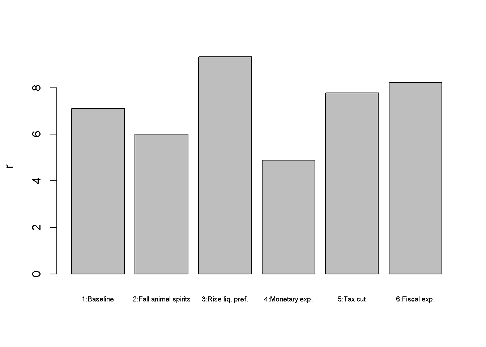
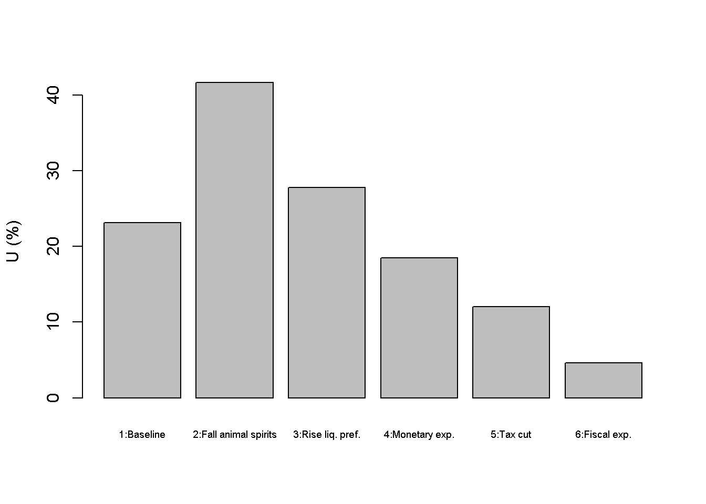
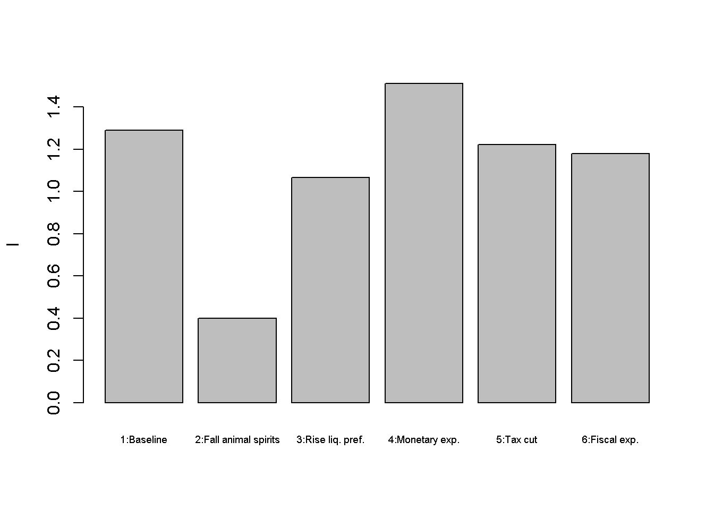
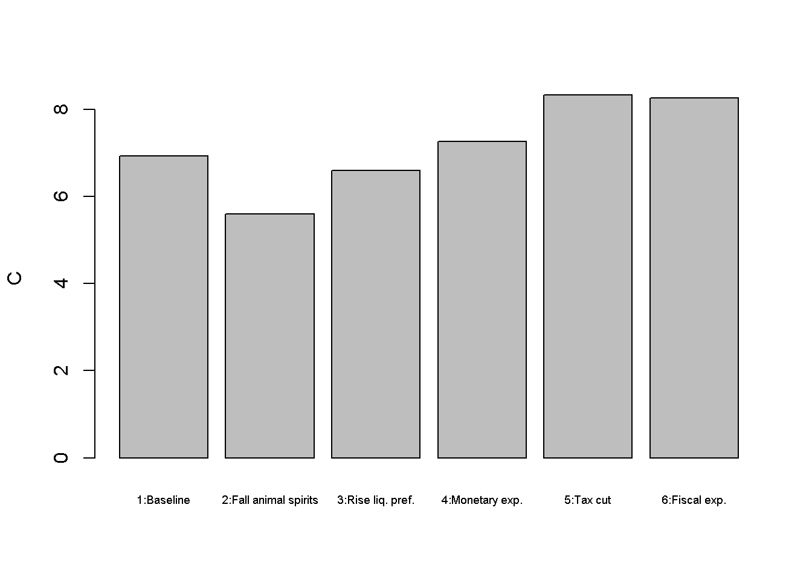
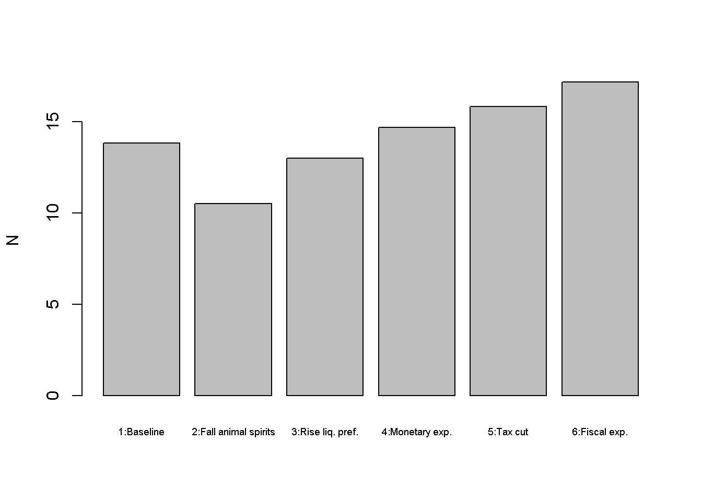
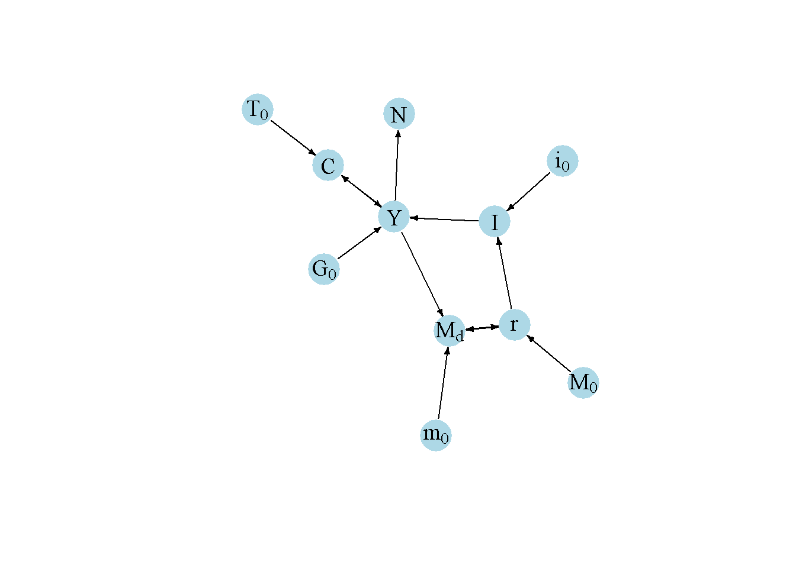

#Clear the environment
rm(list=ls(all=TRUE))
# Set number of scenarios (including baseline)
S=6
#Create vector in which equilibrium solutions from different parameterisations will be stored
Y_star=vector(length=S) # Income/output
C_star=vector(length=S) # Consumption
I_star=vector(length=S) # Investment
r_star=vector(length=S) # Real interest rate
N_star=vector(length=S) # Employment
U_star=vector(length=S) # Unemployment rate
# Set exogenous variables that will be shifted
i0=vector(length=S) # autonomous investment
m0=vector(length=S) # Autonomous demand for money
M0=vector(length=S) # money supply
G0=vector(length=S) # government spending
T0=vector(length=S) # taxes
i0[]=2
m0[]=6
M0[]=5
G0[]=1
T0[]=1
## Construct scenarios
# scenario 2: fall in animal spirits
i0[2]=1
#scenario 3: increase in liquidity preference
m0[3]=7
# scenario 4: monetary expansion
M0[4]=6
# scenario 5: reduction in tax rate
T0[5]=0
# scenario 6: fiscal expansion
G0[6]=2
#Set constant parameter values
c0=2 # Autonomous consumption
c1=0.6 # Sensitivity of consumption with respect to the income (marginal propensity to consume)
i1=0.1 # Sensitivity of investment with respect to the interest rate
m1=0.2 # Sensitivity of money demand with respect to income
m2=0.4 # Sensitivity of money demand with respect to interest rate
a=1.5 # labour coefficient
Nf=18 # Full employment/labour force
# Initialise endogenous variables at some arbitrary positive value
Y = C = I =r = N = U = 1
#Solve this system numerically through 1000 iterations based on the initialisation
for (i in 1:S){
for (iterations in 1:1000){
#Model equations
# Goods market equilibrium
Y = C + I + G0[i]
# Consumption demand
C = c0 + c1*(Y-T0[i])
# Investment demand
I = i0[i] - i1*r
# Money market, solved for interest rate
r = (m0[i] - M0[i])/m2 + m1*Y/m2
# Employment
N = a*Y
#Unemployment rate
U = (1 - N/Nf)
}
#Save results for different parameterisations in vector
Y_star[i]=Y
C_star[i]=C
I_star[i]=I
r_star[i]=r
N_star[i]=N
U_star[i]=U
}4 An IS-LM Model
Overview
The IS-LM model was developed by John R. Hicks (1937) to formalise some key ideas of John Maynard Keynes’ 1936 book The General Theory of Employment, Interest and Money. The model contains two equilibrium relationships: a goods market equilibrium between investment and saving (IS) and a money market equilibrium between money demand and money supply (LM). In the goods market, aggregate supply adjusts to the level of aggregate demand given by the expenditure decisions of households, firms, and the government. Households form their consumption demand based on a constant marginal propensity to consume out of income. Firms take investment decisions based on the rate of interest. Money demand is determined by aggregate income (transactions demand) and the interest rate on bonds (speculative demand). The money supply is assumed to be exogenous and under the control of the central bank. The two markets pin down equilibrium output and the interest rate. The goods market equilibrium may well coincide with involuntary unemployment. Adverse shocks to autonomous investment (‘animal spirits’) or autonomous money demand (‘liquidity preference’) reduce output and raise unemployment. The government can use monetary policy, fiscal spending, and income taxes to stimulate economic activity and achieve full employment.
In this short-run model, prices and the capital stock are fixed. The focus is thus on goods market equilibrium rather than economic growth. As all endogenous variables adjust instantaneously, the model is static. We consider a version with linear functions, adapted from Blanchard and Johnson (2013, chap. 5).
The Model
\[ Y=C+I+G \tag{4.1}\]
\[ C=c_{0}+c_{1}(Y-T), \quad c_{1} \in(0,1) \tag{4.2}\]
\[ I=i_{0}-i_{1} r, \quad i_{1}>0 \tag{4.3}\]
\[ G=G_{0} \tag{4.4}\]
\[ T=T_{0} \tag{4.5}\]
\[ M_{s}=M_{0} \tag{4.6}\]
\[ M_{d}=m_{0}+m_{1} Y-m_{2} r, \quad m_{1}>0 \tag{4.7}\]
\[ M=M_{d}=M_{s} \tag{4.8}\]
\[ N=a Y, \quad a>0 \tag{4.9}\]
\[ U=1-\frac{N}{N^{f}} \tag{4.10}\]
where \(Y\), \(C\), \(I\), \(G\), \(T\), \(r\), \(M_{d}\), \(M_{s}\), \(N\), \(U\) and \(N^{f}\) are output, consumption, investment, government spending, taxes, the interest rate on bonds, money demand, money supply, employment, the unemployment rate, and the labour force, respectively. The constant price level has been normalised to unity.
Equation 4.1 is the goods market equilibrium condition. Aggregate supply \((Y)\) accommodates to the level of aggregate demand which is the sum of consumption, investment, and government spending. Equation 4.2 is the consumption function consisting of autonomous consumption demand \(\left(c_{0}\right)\) and a marginal propensity to consume \(\left(c_{1}\right)\) out of disposable income \((Y-T)\). Investment demand in Equation 4.3 has an autonomous component \(\left(i_{0}\right)\) capturing Keynesian animal spirits and a component that is negatively related to the rate of interest on bonds. By equations Equation 4.4 and Equation 4.5, government spending and taxation are exogenous. Similarly, the money supply in Equation 4.6 is assumed to be exogenous. By Equation 4.7, households’ money demand is positively related to income (capturing the transaction demand for money) and negatively related to the interest rate on bonds (capturing speculative demand). There is also an autonomous term \(\left(m_{0}\right)\) capturing Keynesian liquidity preference. Equation 4.9 is a fixed-coefficient production function through which employment is determined. In conjunction with an exogenously given labour force \(\left(N^{f}\right)\), the level of employment can be used to obtain an unemployment rate in Equation 4.10.
Simulation
Parameterisation
Table 1 reports the parameterisation used in the simulation. Besides a baseline (labelled as scenario 1), five further scenarios will be considered. Scenarios 2 and 3 model a switch towards pessimistic sentiments: a fall in animal spirits \(\left(i_{0}\right)\) and an increase in liquidity preference \(\left(m_{0}\right)\). Scenarios 4 to 6 consider three different government policies to stimulate the economy: a monetary expansion \(\left(M_{0}\right)\), a tax cut \(\left(T_{0}\right)\), and a fiscal expansion \(\left(G_{0}\right)\).
Table 1: Parameterisation
| Scenario | \(c_{0}\) | \(c_{1}\) | \(i_{0}\) | \(i_{1}\) | \(m_{0}\) | \(m_{1}\) | \(m_{2}\) | \(M_{0}\) | \(T_{0}\) | \(G_{0}\) | \(a\) | \(N^{f}\) |
|---|---|---|---|---|---|---|---|---|---|---|---|---|
| 1: baseline | 2 | 0.6 | 2 | 0.1 | 6 | 0.2 | 0.4 | 5 | 1 | 1 | 1.5 | 18 |
| 2: fall in animal spirits (\(i_{0}\)) | 2 | 0.6 | 1 | 0.1 | 6 | 0.2 | 0.4 | 5 | 1 | 1 | 1.5 | 18 |
| 3: increased liquidity preference (\(m_{0}\)) | 2 | 0.6 | 2 | 0.1 | 7 | 0.2 | 0.4 | 5 | 1 | 1 | 1.5 | 18 |
| 4: monetary expansion (\(M_{0}\)) | 2 | 0.6 | 2 | 0.1 | 6 | 0.2 | 0.4 | 6 | 1 | 1 | 1.5 | 18 |
| 5: tax cut (\(T_{0}\)) | 2 | 0.6 | 2 | 0.1 | 6 | 0.2 | 0.4 | 5 | 0 | 1 | 1.5 | 18 |
| 6: fiscal expansion (\(G_{0}\)) | 2 | 0.6 | 2 | 0.1 | 6 | 0.2 | 0.4 | 5 | 1 | 2 | 1.5 | 18 |
Simulation code
Python code
import numpy as np
# Set the number of scenarios (including baseline)
S = 6
# Create arrays to store equilibrium solutions from different parameterizations
Y_star = np.empty(S) # Income/output
C_star = np.empty(S) # Consumption
I_star = np.empty(S) # Investment
r_star = np.empty(S) # Real interest rate
N_star = np.empty(S) # Employment
U_star = np.empty(S) # Unemployment rate
# Set exogenous variables that will be shifted
i0 = np.zeros(S) # Autonomous investment
m0 = np.zeros(S) # Autonomous demand for money
M0 = np.zeros(S) # Money supply
G0 = np.zeros(S) # Government spending
T0 = np.zeros(S) # Taxes
# Baseline parameterisation
i0[:] = 2
m0[:] = 6
M0[:] = 5
G0[:] = 1
T0[:] = 1
# Construct scenarios
# scenario 2: fall in animal spirits
i0[1] = 1
# scenario 3: increase in liquidity preference
m0[2] = 7
# scenario 4: monetary expansion
M0[3] = 6
# scenario 5: reduction in tax rate
T0[4] = 0
# scenario 6: fiscal expansion
G0[5] = 2
# Set constant parameter values
c0 = 2 # Autonomous consumption
c1 = 0.6 # Sensitivity of consumption with respect to income (marginal propensity to consume)
i1 = 0.1 # Sensitivity of investment with respect to the interest rate
m1 = 0.2 # Sensitivity of money demand with respect to income
m2 = 0.4 # Sensitivity of money demand with respect to the interest rate
a = 1.5 # labor coefficient
Nf = 18 # Full employment/labor force
# Initialize endogenous variables at some arbitrary positive value
Y = C = I =r = N = U = 1
# Solve this system numerically through 1000 iterations based on the initialization
for i in range(S):
for iterations in range(1000):
# Model equations
# Goods market equilibrium
Y = C + I + G0[i]
# Consumption demand
C = c0 + c1 * (Y - T0[i])
# Investment demand
I = i0[i] - i1 * r
# Money market, solved for interest rate
r = (m0[i] - M0[i]) / m2 + m1 * Y / m2
# Employment
N = a * Y
# Unemployment rate
U = 1 - N / Nf
# Save results for different parameterizations in the arrays
Y_star[i] = Y
C_star[i] = C
I_star[i] = I
r_star[i] = r
N_star[i] = N
U_star[i] = U
Plots
Figure 15.1 and Figure 4.2 depict the response of the model’s key endogenous variables, output and the interest rate, to various shifts. A fall in animal spirits (scenario 2) and an increase in liquidity preference (scenario 3) both have contractionary effects. While the fall in animal spirits directly reduces aggregate demand and thereby output (despite a fall in the interest rate), the rise in liquidity preference depresses output through its positive effect on the interest rate. Both scenarios raise the unemployment rate (Figure 4.3). Scenarios 4 to 6 assess three different macroeconomic policy tools to stimulate output. It can be seen in Figure 15.1 that fiscal policy is more effective than monetary policy for the parameterisation in Table 1.1 Direct fiscal stimulus is more effective than tax cuts due to the constant marginal propensity to consume. The effect on output is a multiple of the one-unit stimulus thanks to the multiplier effect. However, it can also be seen that fiscal policy raises the interest rate, which crowds out some of the expansionary effect.
barplot(Y_star, ylab="Y", names.arg=c("1:Baseline", "2:Fall animal spirits", "3:Rise liq. pref.",
"4:Monetary exp.", "5:Tax cut", "6:Fiscal exp."), cex.names = 0.6)barplot(r_star, ylab="r", names.arg=c("1:Baseline", "2:Fall animal spirits", "3:Rise liq. pref.",
"4:Monetary exp.", "5:Tax cut", "6:Fiscal exp."), cex.names = 0.6)
barplot(U_star*100, ylab="U (%)", names.arg=c("1:Baseline", "2:Fall animal spirits", "3:Rise liq. pref.",
"4:Monetary exp.", "5:Tax cut", "6:Fiscal exp."), cex.names = 0.6)
Figure 4.4 and Figure 4.5 further show that monetary policy mostly stimulates investment, whereas fiscal policy boost consumption.
barplot(I_star, ylab="I", names.arg=c("1:Baseline", "2:Fall animal spirits", "3:Rise liq. pref.",
"4:Monetary exp.", "5:Tax cut", "6:Fiscal exp."), cex.names = 0.6)
barplot(C_star, ylab="C", names.arg=c("1:Baseline", "2:Fall animal spirits", "3:Rise liq. pref.",
"4:Monetary exp.", "5:Tax cut", "6:Fiscal exp."), cex.names = 0.6)
barplot(N_star, ylab="N", names.arg=c("1:Baseline", "2:Fall animal spirits", "3:Rise liq. pref.", "4:Monetary exp.", "5:Tax cut", "6:Fiscal exp."), cex.names = 0.6)
Python code
# Plot results (here only for output)
import matplotlib.pyplot as plt
scenario_names = ["1:Baseline", "2:Fall animal spirits", "3:Rise liq. pref.",
"4:Monetary exp.", "5:Tax cut", "6:Fiscal exp."]
plt.bar(scenario_names, Y_star)
plt.ylabel('Y')
plt.xticks( scenario_names, rotation=45, fontsize=6)
plt.show()Directed graph
Another perspective on the model’s properties is provided by its directed graph. A directed graph consists of a set of nodes that represent the variables of the model. Nodes are connected by directed edges. An edge directed from a node \(x_{1}\) to node \(x_{2}\) indicates a causal impact of \(x_{1}\) on \(x_{2}\).
# Construct auxiliary Jacobian matrix for 11 variables: Y, C, I, G, T, r, M0, N, i0, m0, Md
# where non-zero elements in regular Jacobian are set to 1 and zero elements are unchanged
M_mat=matrix(c(0,1,1,1,0,0,0,0,0,0,0,
1,0,0,0,1,0,0,0,0,0,0,
0,0,0,0,0,1,0,0,1,0,0,
0,0,0,0,0,0,0,0,0,0,0,
0,0,0,0,0,0,0,0,0,0,0,
0,0,0,0,0,0,1,0,0,0,1,
0,0,0,0,0,0,0,0,0,0,0,
1,0,0,0,0,0,0,0,0,0,0,
0,0,0,0,0,0,0,0,0,0,0,
0,0,0,0,0,0,0,0,0,0,0,
1,0,0,0,0,1,0,0,0,1,0), 11, 11, byrow=TRUE)
# Create adjacency matrix from transpose of auxiliary Jacobian
A_mat=t(M_mat)
# Create directed graph from adjacency matrix
library(igraph)Warning: package 'igraph' was built under R version 4.2.3dg= graph_from_adjacency_matrix(A_mat, mode="directed", weighted= NULL)
# Define node labels
V(dg)$name=c("Y", "C", "I", expression(G[0]), expression(T[0]), "r", expression(M[0]), "N", expression(i[0]), expression(m[0]), expression(M[d]))
# Plot directed graph
plot(dg, main="", vertex.size=20, vertex.color="lightblue",
vertex.label.color="black", edge.arrow.size=0.3, edge.width=1.1, edge.size=1.2,
edge.arrow.width=1.2, edge.color="black", vertex.label.cex=1.2,
vertex.frame.color="NA", margin=-0.08)
Python code
# Load relevant libraries
import networkx as nx
import matplotlib.pyplot as plt
import numpy as np
# Define the auxiliary Jacobian matrix
M_mat = np.array([
[0, 1, 1, 1, 0, 0, 0, 0, 0, 0, 0],
[1, 0, 0, 0, 1, 0, 0, 0, 0, 0, 0],
[0, 0, 0, 0, 0, 1, 0, 0, 1, 0, 0],
[0, 0, 0, 0, 0, 0, 0, 0, 0, 0, 0],
[0, 0, 0, 0, 0, 0, 0, 0, 0, 0, 0],
[0, 0, 0, 0, 0, 0, 1, 0, 0, 0, 1],
[0, 0, 0, 0, 0, 0, 0, 0, 0, 0, 0],
[1, 0, 0, 0, 0, 0, 0, 0, 0, 0, 0],
[0, 0, 0, 0, 0, 0, 0, 0, 0, 0, 0],
[0, 0, 0, 0, 0, 0, 0, 0, 0, 0, 0],
[1, 0, 0, 0, 0, 1, 0, 0, 0, 1, 0]
])
# Create adjacency matrix from transpose of auxiliary Jacobian and add column names
A_mat = M_mat.transpose()
# Create the graph from the adjacency matrix
G = nx.DiGraph(A_mat)
# Define node labels
nodelabs = {
0: "Y",
1: "C",
2: "I",
3: r"$G_0$",
4: r"$T_0$",
5: "r",
6: r"$M_0$",
7: "N",
8: r"$i_0$",
9: r"$m_0$",
10: r"$M_d$"
}
# Plot the directed graph
pos = nx.spring_layout(G, seed=43)
nx.draw(G, pos, with_labels=True, labels=nodelabs, node_size=300, node_color='lightblue',
font_size=10)
edge_labels = {(u, v): '' for u, v in G.edges}
nx.draw_networkx_edge_labels(G, pos, edge_labels=edge_labels, font_color='black')
plt.axis('off')
plt.show()Analytical discussion
To obtain the IS-curve, substitute Equation 4.2 - Equation 4.5 into Equation 4.1 and solve for \(Y\):
\[ Y=\left(\frac{1}{1-c_1}\right)(c_0 + i_0 + G_0 - i_1r - c_1 T_0). \tag{4.11}\]
To obtain the LM-curve, substitute Equation 4.6 - Equation 4.7 into Equation 4.8 and solve for \(r\):
\[ r=\left(\frac{1}{m_2}\right)(m_0 - M_0 + m_1Y). \tag{4.12}\]
Finally, to obtain equilibrium solutions for \(Y\) and \(r\), substitute Equation 4.12 into Equation 4.11 and vice versa:
\[ Y^*=\left[\frac{m_2}{(1-c_1)m_2+i_1m_1}\right](c_0 + i_0 + G_0 - c_1 T_0) + \left[\frac{i_1}{(1-c_1)m_2+i_1m_1}\right](M_0-m_0) \]
\[ r^*= \left[\frac{1-c_1}{(1-c_1)m_2+i_1m_1}\right](m_0-M_0)+\left[\frac{m_1}{(1-c_1)m_2+i_1m_1}\right](c_0+i_0+G_0-c_1T_0). \]
From this, the following results can be obtained:
The equilibrium effects of a change in taxes are smaller than those from a change in government spending (since \(c_1\) is smaller than one).
Government spending is more effective than monetary expansion if \(m_2 > i_1\) (which is the case for the parameterisation in Table 1.
The equilibrium multiplier \(\left[\frac{m_2}{(1-c_1)m_2+i_1m_1}\right]\) is smaller than the aggregate demand multiplier \(\left(\frac{1}{1-c_1}\right)\) due to the positive effect on the interest rate and the corresponding negative effect investment (\(i_1m_1\)). This is the crowding out mechanism.
Calculate equilibrium fiscal multiplier
Y_star[6]-Y_star[1] # numerical approach[1] 2.222222m2/((1-c1)*m2+i1*m1) # analytical approach[1] 2.222222
Python code
Y_star[5]-Y_star[0] # numerical approach
m2/((1-c1)*m2+i1*m1) # analytical approachReferences
Blanchard, Olivier, and David R. Johnson. 2013. Macroeconomics, 6th Edition. Pearson.
The analytical discussion below shows formally that fiscal policy is more effective than monetary policy if \(m_{2}>i_{2}\).↩︎